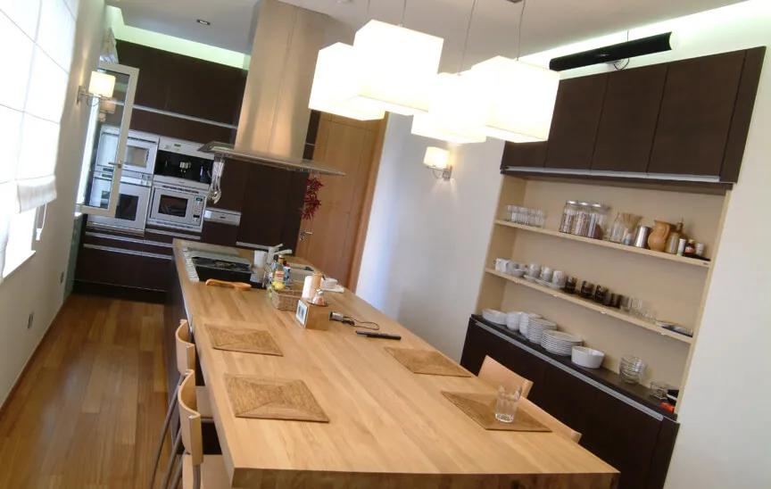

Bold, rather than Brash
A stúdió merész, mégis visszafogott építészeti formálásáról szóló nemzetközi publikáció.
Media / hírek
Hazai és nemzetközi sajtóban megjelent videók, interjúk és cikkek Bényei Istvánról, a B13 Architects munkáiról és a stúdió építészeti gondolkodásáról.


Bejegyzések
A médiaarchívum tartalmai bejegyzéslogikába rendezve, médium, projekt, év, típus és téma szerint kereshetően.

A stúdió merész, mégis visszafogott építészeti formálásáról szóló nemzetközi publikáció.

Írás egy minőségi, kompromisszummentes lakóépületről, amely két eltérő karaktert tart fegyelmezett egységben.
A Debreceni Egyetem Learning Center belső tereinek bemutatása, ahol a lépték, az áttekinthetőség és az otthonosság együtt jelenik meg.

Magyar nyelvű publikáció a kifinomult, karakteres építészeti gondolkodásról.
A publikáció az emberi kapcsolatok, a természetközelség és a csend luxusként értelmezett szerepét emeli ki.
Minimalista, nem hivalkodó, 21. századi lakóépület bemutatása építészeti részleteken keresztül.

A luxus lakóterek modern értelmezése a design minőségén túl a természettel való kapcsolatra épül.

Családi ház a főváros szélén, ahol a telek nehéz adottságai építészeti lehetőséggé válnak.
Nemzetközi reflexió a környezet intimitásának megértéséről és a társasházi lépték emberközpontú kezeléséről.
A természettel és az emberekkel való kapcsolat helyreállítása mint tervezési alapelv.

Értékteremtő épület bemutatása, amely modellként olvasható a heterogén környezetben.

Kortárs családi ház a kis faluban, a népi építészet alapformájának szabad újraértelmezéseként.
A Média Építészeti Díjához kapcsolódó válogatás, szakmai zsűri által kiemelt épületekkel.
Publikáció a bejárat építészeti jelentőségéről és a lakóház szerkesztett gesztusairól.

Budapesti családi ház sűrű beépítésű környezetben, több párhuzamos tervezési problémára adott válasszal.

Beszélgetés arról, hogyan inspirálhatnak a lakóépületek fenntarthatóbb megoldásokra.
Ipari romból alakított műterem, amely a Média Építészeti Díján is a közönség által kiemelt épületek közé került.
A PREFA pályázatához kapcsolódó szakmai megjelenés, díjazott építészeti munkákkal.

Televíziós megjelenés Bényei István házairól, praktikus, ésszerű és letisztult lakóterekről.
Korai nemzetközi sajtómegjelenés a Bényei István és Héder János által tervezett MEO kapcsán.
Kimagasló minőségű kortárs épület, amelyet funkcionális rend, arányosság és fogalmi tisztaság szervez.
A fénnyel, hangokkal, kilátással és szabad térrel való tudatos építkezés eredménye.
Beszélgetés Bényei Istvánnal építészetről, környezetről, akaratról, pénzről és tehetségről.
A MEO impozáns és praktikus tereiről, valamint az új, önálló építészeti karakterről szóló publikáció.
Riport a kortárs képzőművészet új helyszíneiről, több szakemberrel, köztük Bényei Istvánnal.
Kapcsolódó stúdióinterjú építészetről, felelősségről és a műterem saját gondolkodásáról.
Nincs találat erre a szűrésre. Próbálj más keresőszót vagy tágabb kategóriát.
Sajtó és együttműködés
Sajtómegkereséshez a stúdióval közvetlenül érdemes felvenni a kapcsolatot. Projektképek, háttéranyagok és interjúegyeztetés célzott kérés alapján készülnek elő.